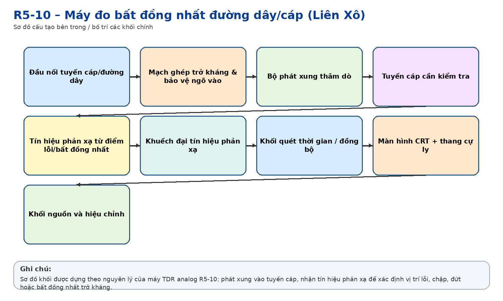
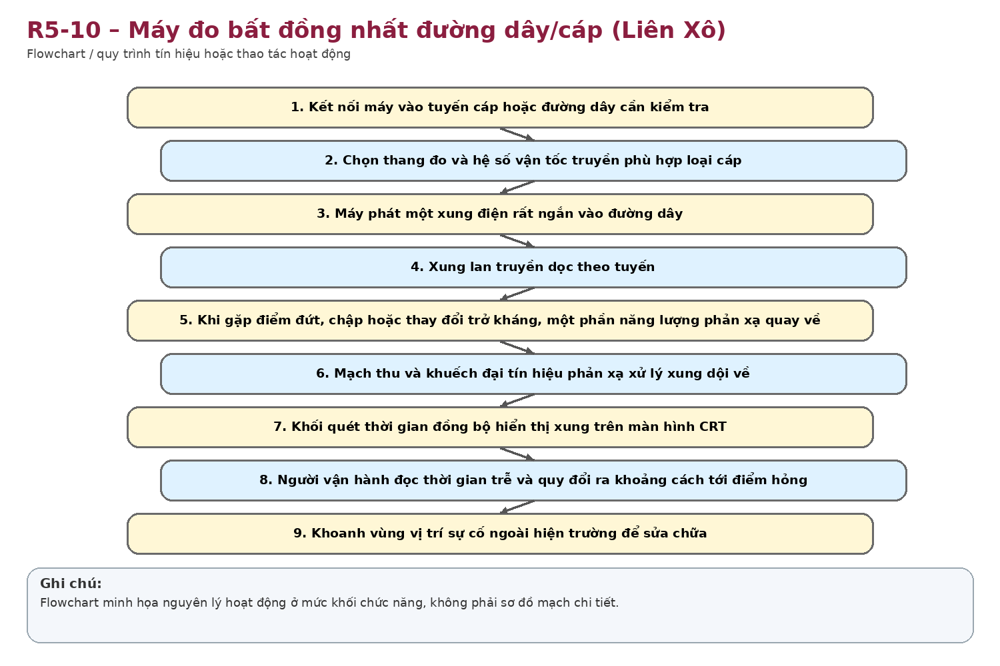
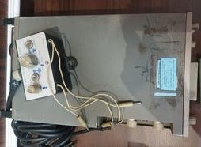
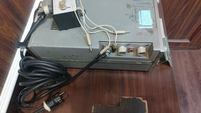

Nhận dạng & niên đại
Công dụng
Công dụng chung
Phát hiện đứt dây, ngắn mạch, chỗ nối/tiếp xúc xấu, thay đổi trở kháng; xác định khoảng cách từ điểm đo đến vị trí sự cố hoặc bất đồng nhất trên đường dây/cáp.
Trong thông tin tín hiệu đường sắt
Dùng cho bảo trì cáp thông tin, cáp tín hiệu và các đôi dây chạy dọc tuyến; giúp khoanh vùng vị trí sự cố trước khi cử nhân viên ra hiện trường, giảm thời gian dò tìm thủ công.
Phạm vi làm việc
Đặc biệt phù hợp tuyến dài; có nhiều thang thời gian và độ rộng xung để cân bằng giữa tầm đo, độ phân giải và suy hao.
Cấu tạo bên trong

Khối phát xung thăm dò; mạch ghép và chọn trở kháng đường dây; bộ khuếch đại tín hiệu phản xạ; mạch quét/thời gian; bộ hiệu chuẩn; màn hình ống tia điện tử CRT; hệ thống núm chỉnh biên độ, vị trí, thang đo; khối nguồn AC/DC.
Cách thức hoạt động

Nguyên lý phản xạ theo miền thời gian (TDR): máy phóng xung điện vào cáp. Khi xung gặp điểm có trở kháng thay đổi (đứt, chập, mối nối, suy giảm cách điện…), một phần xung phản xạ trở lại. Máy hiển thị xung phát và xung phản xạ trên CRT; từ độ trễ thời gian và hệ số truyền của cáp suy ra khoảng cách đến điểm lỗi.
Thông số kỹ thuật
Thông số chính
Dải khoảng cách toàn thang: 0,3 / 1 / 3 / 10 / 30 / 100 / 300 km; khoảng cách nhỏ nhất khoảng 5 m; sai số cơ bản khoảng ±1% thang; độ nhạy theo suy hao tới khoảng 80 dB; trở kháng vào điều chỉnh khoảng 30–470 Ω; kích thước khoảng 160×274×430 mm; khối lượng khoảng 9,8 kg (tùy khối nguồn).
Nguồn điện / cấp nguồn
Nguồn AC khoảng 220 V, 50/400 Hz hoặc DC/nguồn ắc quy tùy khối nguồn; các tài liệu kỹ thuật nêu các dải DC 10–16 V và 22–30 V cho các cấu hình.
Giá trị lịch sử – trưng bày
Thể hiện bước chuyển từ phương pháp cầu đo điện trở thủ công sang định vị sự cố cáp bằng điện tử và phản xạ xung. Có giá trị minh họa rõ sự hiện đại hóa công tác đo kiểm TTTH.
Tình trạng quan sát
Ảnh cho thấy máy còn tương đối đầy đủ mặt điều khiển, CRT, cáp/đầu nối; vỏ có dấu sử dụng và bụi. Chưa xác định tình trạng hoạt động điện.
Ảnh hiện vật


Xác minh thêm & nguồn tham khảo
Căn cứ mốc sử dụng tại Việt Nam/ĐSVN:
Ước
tính có căn cứ theo niên đại thiết bị và lịch sử đơn vị; KHÔNG
nên ghi thành năm chính thức nếu chưa có hồ sơ tài sản/bàn giao.